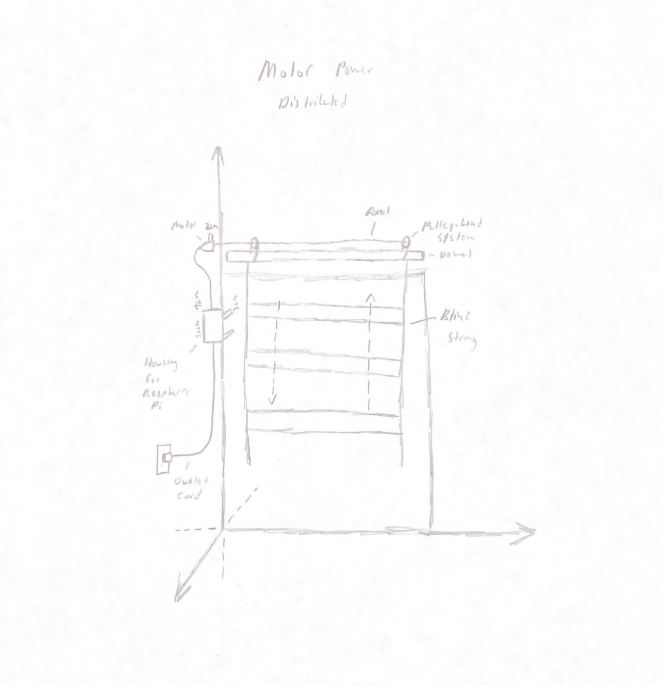
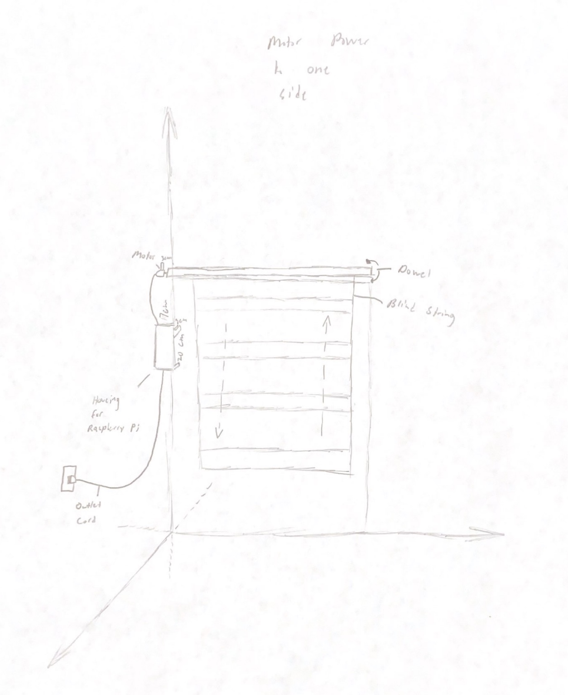
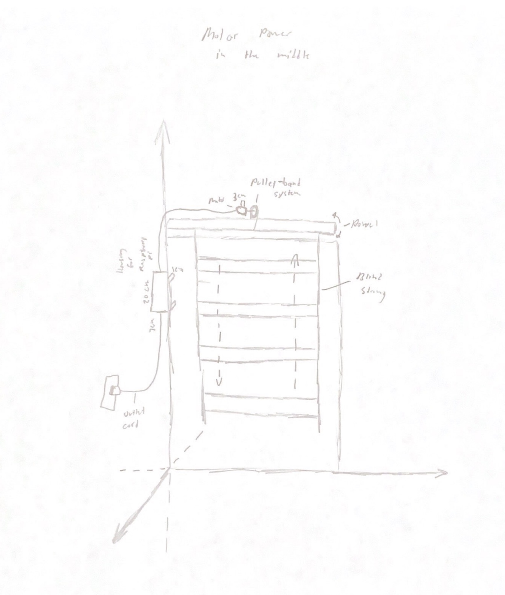
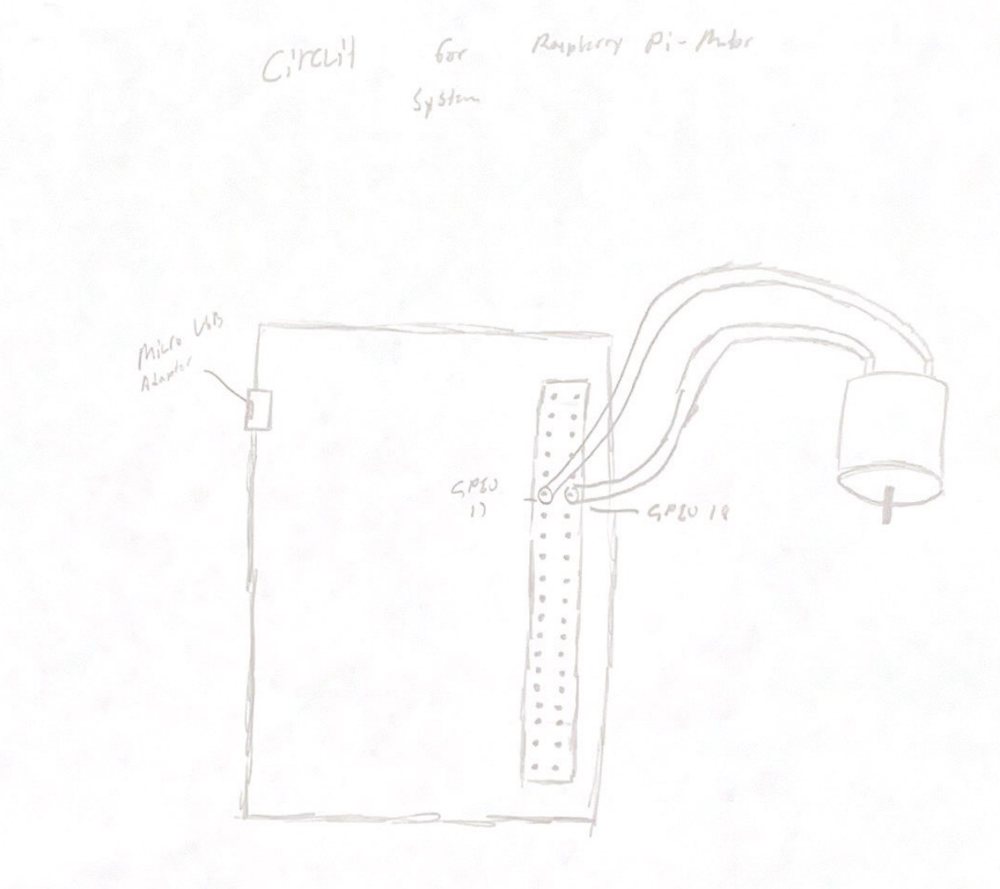
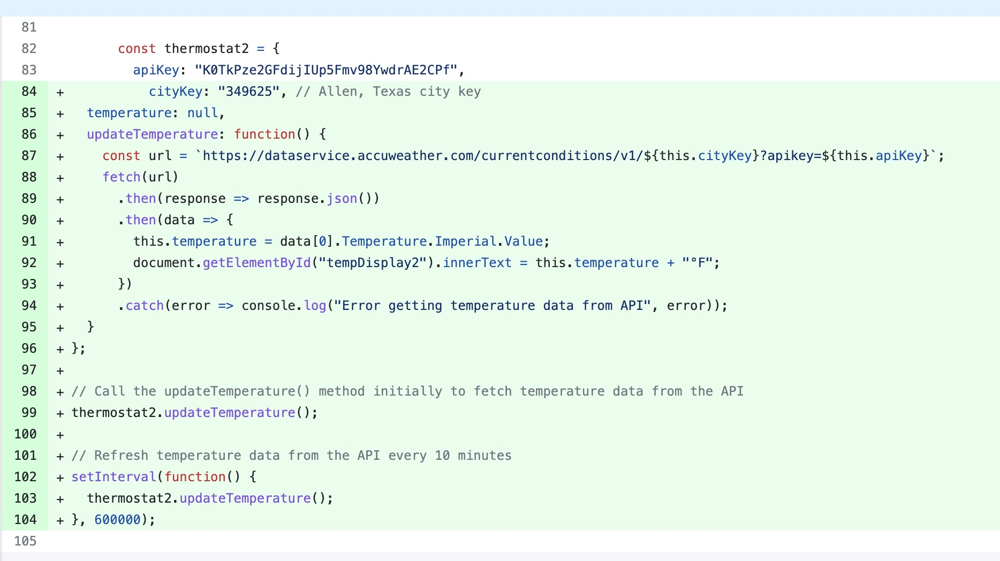
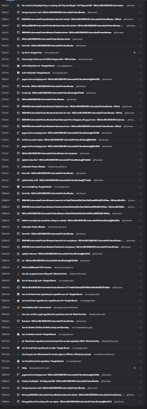
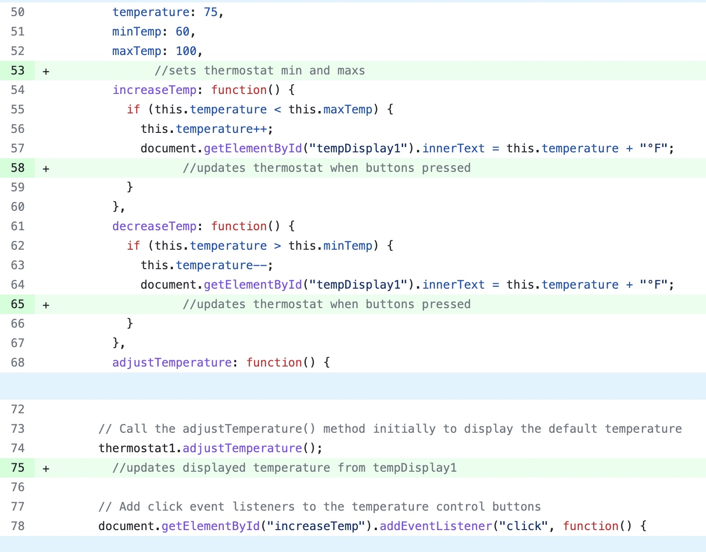
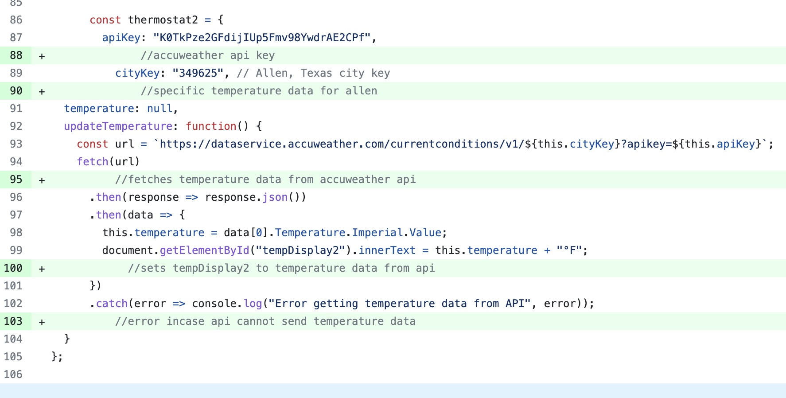
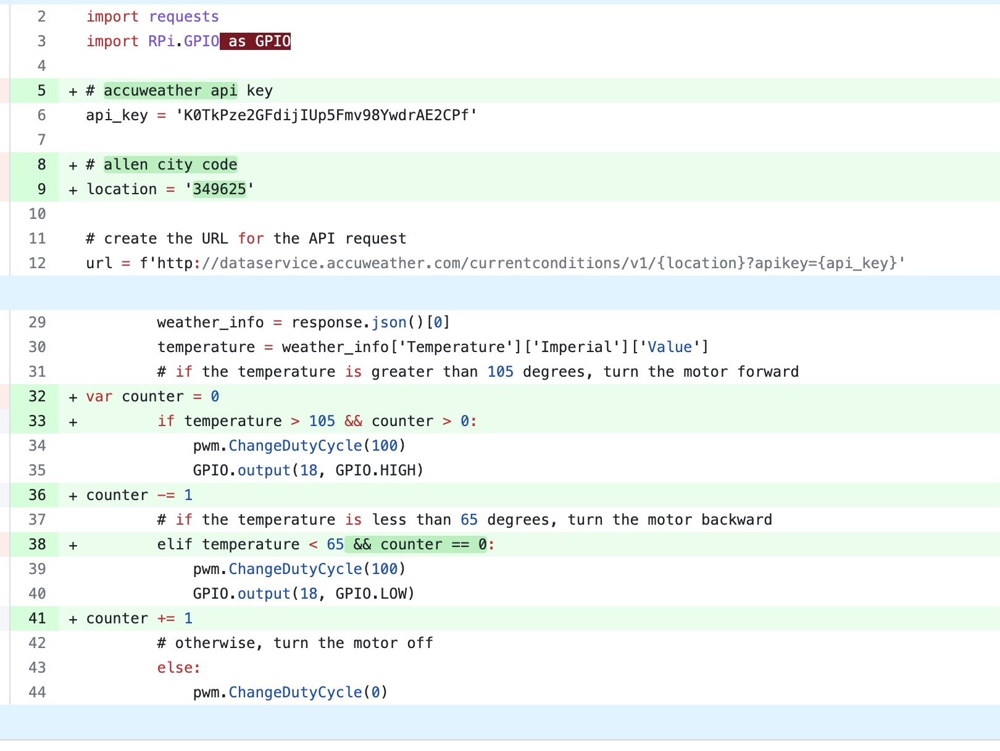

Technical Challenges: I am having trouble with something on Github. When I try to deploy my commits there is an failed test called "Build with Jekyll". This causes some of the CSS of my html page to not load even though the code works. I know the code works as past commits have previously worked but when the branch is rolled back I get the error. From my research it's something to do with Github Pages.
Scheduling Challenges: My only scheduling challenge for this week has been my IB exams. They have limited the time I can work on the project. Hardware wise we are severely behind.
Interpersonal Challenges: I am very frustrated because Heng Yi and Adheesh have not done a single thing on the ISP since the beginning.
  Weekly Plan: For this week I plan to run several tests with our code and the Raspberry Pi. We want to ensure that we encounter any bugs prior to our launch and presentation. I plan to see how the API reacts to the Raspbian OS and if it can make a stable connection.
Issue The Gantt ChartTechnical Challenges: I finally fixed the code between the API and the website. The problem was that I had the wrong city key and the values fetched from the temperature data of the weather API were not in the correct scope.
Scheduling Challenges: The software portion of our project is done, but hardware is behind. IB exams are approaching and I will need to allocate time to those exams.
Interpersonal Challenges: Heng Yi and Adheesh are not working on the ISP at all. I tried to let them just do the hardware while I do the software but they have not started.
  Weekly Plan: For this week I plan to continue working on the weather API implementation into the ISP. We are still having some trouble with the API connecting to the website as well as the ISP fetching the temperature data from the API. We get an error message on the website console saying that there was a problem fetching from the API. The 'Loading...' message continues to appear on the website thermostat.
Issue The Gantt ChartTechnical Challenges: I am having some trouble with the CSS on my website. There are some small problems that take away from the overall appeal of the website. I'd like to work on them but there are bigger priorities in the ISP to be done.
Scheduling Challenges: We are behind on the hardware and as a result the software is being hindered from progressing. The code can not be tested alongside the hardware and its compatibility if there is no hardware.
Interpersonal Challenges: I gave Heng Yi and Adheesh the job of doing the hardware as I have done all the software. But they have not done anything with the hardware and as a result I can not test my code with the hardware.
  Weekly Plan: For this week I plan to finalize the connection between our weather API and the website. Both applications work fine on their own, but the implementation of the weather API to the thermostat of the website does not work. The thermostat continues to show 'Loading...' instead of the fetched temperature from the Accuweather API.
Issue The Gantt ChartTechnical Challenges: I was challenged for a large portion of time on a very simple thermostat I made. The program had two thermostats. One would be manipulated my the user using the user-interface of the website, and the other would change based on the data from the weather API. My function for the buttons of the thermostat were not working nor was the temperature even showing up on the thermostat. It turned out that my function for temperature was not in the scope of the thermostat and I quickly fixed the issue.
Scheduling Challenges: We have actually gotten fairly back on track. I made some good progress with the website and how it will fetch data from the weather API. We narrowed down the data our ISP will be analyzing to just temperature due to time constraints. We are behind on the hardware aspect, but hopefully we will be back on track soon.
Interpersonal Challenges: I have had some trouble with us not following the branching strategy I implemented on the Github. It makes it more confusing when merging. I have to double check someone did not commit to "main" before working on the test branch or else I would cause a merge conflict.
Contribution 1 Contribution 2 Contribution 3Technical Challenges: We have come to a road-block of trying to connect our webstie to our weather API. We are unsure how to have the information for the website and API communicate to control the motor of the window blinds. For example, the buttons of the website controlling the turning of the motor to maintain temperature.
Scheduling Challenges: This week we actually made a lot of progress on the website. I made a lot of progress designing and putting everything we wanted. There is a lot of advertising and psychology techniques used to attract users. I do not think we will need to make many more changes - beyond minor css adjustments - to the website.
Interpersonal Challenges: I am starting to become more stressed with the impending deadline and have been trying to do more work on the website. However, my teammates, while vocalizing their concerns, have yet to act. I would like for them to take some initiative and maybe work on the hardware. Hopefully there will be a change in work ethic next week.
Contribution 1 Contribution 2 Contribution 3 Contribution 4 Contribution 5 Contribution 6 Contribution 7Technical Challenges: A technical challenge we have encountered is that we are struggling to implement our weather API to our project. We may need to look into another API or further research the API we have chosen.
Scheduling Challenges: We have unfortunatly fallen behind in our initial plan that we made using a gantt chart. We may have to scrap some of the ideas we had for the project to meet our deadline to produce a functioning product in time.
Interpersonal Challenges: We have been challenged this week by a sudden influx of assignments for other classes. This has made us busy with other work that we have been unable to work much on the ISP.
Contribution 1 Contribution 2 Contribution 3Technical Challenges: This week we did not encounter any major technical issues. We still need to research more into practical application of our weather API for our project, but beyond that we are doing ok.
Scheduling Challenges: With Mr. Ben gone, we expect to have a bit more time in class to work on our ISP. We have been trying to split our efforts between the software and hardware. However, we have been prodominantly focused on the software side of the project.
Interpersonal Challenges: Not really a problem with our group but we found that it is incredibly hard to work in the classroom with the ammount of noise. The substitute we had talked for a large portion of the class and the other students were excessively loud.
Contribution 1 Contribution 2 Contribution 3Technical Challenges: A technical challenge we encountered is our branching strategy. I had trouble working with some of the merges that messed up. However, after some research I figured out how to use the branching strategy correctly.
Scheduling Challenges: As of right now, we do not have any major scheduling challenges. We are actually planning on meeting up this long weekend to work on the hardware side of our project.
Interpersonal Challenges: An interpersonal challenge that I have just realized is the roles we have assigned. From the looks of it, I am the only developer. While my team can also make commits, I fear that the lack of motivation may put all of the work coding on me.
Technical Challenges: A technical challenge we encountered was choosing our branching strategy. Eventually, we decided on having one development branch that merges into the main branch.
Scheduling Challenges: A scheduling challenge we encountered was that I was absent the first two days of the week for a swim meet. Luckily, in class that tday we only took notes on SQL and we did not lose any time working on the ISP.
Interpersonal Challenges: An interpersonal challenge we encountered was finding time to make our MVP presentation and poster. As I had more time, I photoshopped and designed our project poster and created a majority of the presentation. I am afraid this will be a reoccuring issue.
Technical Challenges: We did not encounter many technical challenges this week. We are still trying to figure out the details of our project. We have begun using CAD application to model our project but there is a slight learning curve that we need to address.
Scheduling Challenges: A majority of our scheduling issues with other classwork has died down to a reasonable amount. Our biggest challenge now is finding times when we are all availible to meet up and work on the project. The actual hardware building task is something we all need to be present for.
Interpersonal Challenges: No interpersonal challenges this week. Our team has good chemistry and works efficiently together. We still have scheduling issues that we are attempting to solve. Senior year lack of motivation is something to be aware of too in the coming semester.
Technical Challenges: We have had no major technical issues recently. We are hoping to set up a branching system soon which will make our work much more organized. It will also allow us to revert back to previous versions if a mistake is ever made.
Scheduling Challenges: A majority of our scheduling issues with other classwork has died down to a reasonable amount. Our biggest challenge now is finding times when we are all availible to meet up and work on the project. The actual hardware building task is something we all need to be present for.
Interpersonal Challenges: No interpersonal challenges this week. Our team has good chemistry and works efficiently together. We still have scheduling issues that we are attempting to solve. Senior year lack of motivation is something to be aware of too in the coming semester.
Technical Challenges: A challenge we encountered this week was setting up our repository for our ISP. We initially did not have access to editing the repository. This stagnated our progress breifly, but we were able to get back on track. We now have the ability to public publish our concerns and needs for the project through the Issues application of Github.
Scheduling Challenges: A major scheduling challenge we will be facing is finding time to work on our ISP project. In the next couple weeks, all of our team members will be extremely busy with research papers and essays. While we would like to work on the project, we need to prioritize the more serious and upcoming issue at hand before even thinking about the ISP.
Interpersonal Challenges: An interpersonal challenge we faced this week was that not all of our team members were able to be present. Due to sickness, our team was broken up and we were unable to communicate efficiently. Our work was also not evenly distributed as we were required to split the work among two rather than three. Hopefully our team will have more time to work together next week.
Technical Challenges: So far we have not experienced any technical challenges for our ISP project. However, this can be attributed to a lack of focus on the project as we just had finals. Not much progress has been made. We were successfully able to create a Gantt chart using "Click Up" and have used it for chatting about the project. We have done a bit of research regarding the sensors and their possible relationship with motors. We plan on finalizing our plan in the next week or so and move on from there.
Scheduling Challenges: Our main scheduling so far has been staying on track with our Gantt chart. We have neglected our ISP as we have been recently swamped with finals and now multiple important assessments for the International Baccalaureate program. We have been more free-flowing than we would like and need to adhere to our schedule more. To fix this we plan to make meeting dates where we meet either in-person or online to work on the project and hold each other accountable.
Interpersonal Challenges: We have not had any major issues among team members so far. As said before, we have all been equally bad at neglecting our ISP and prioritizing other class work. This is largely due to the urgency of our International Baccalaureate assessments and the long time between now and the due date for the ISP. This may cause issues later on where the work load may be majorly burdened on one individual, thus we must confront this issue now with the team meetings talked about in the "Scheduling Challenges".
(Software) Development Engineer: The role of the "Development Engineer" is designing, creating and testing new products for the companies. Like problem-solvers, they work out why something does not work, and then make it work again. They also make sure that the code is efficient, stable, and works as intended. They also have the job of making sure that the system is secure and can't be back doored. I would be suitible for this role as I have become fairly proficient at coding. Problem-solving is also one of my strengths and would be greatly beneficial.
QA Engineer: Tests the products to find any bugs or errors in the product. Ensures that the product is good for the customer and to make sure that the specifications are adhered to by the product. I believe that I would not be the best person suitible for this as my house is in a very dark area. My house is block by two two-story houses and does not get much sunlight.
Project Manager: The project manager oversees the whole project, makes a time table and makes sure everyone is on track, meeting the proper deadlines. The project manager also monitors the group, solves any issues that arise, evaluates project performance and leads the team. I think that I would be suitible for this role as I take initiative and have leadership skills. I am able to be respectful to others but be direct when need be.
Product Manager: Oversees product development and building. Balances time and other constraints with feature set, and provides support to ensure that all other members are meeting requirements. Manages interactions between different components of the product, e.g. UI/UX, QA, and Development. I think I would be suitible for this role as I understand the demands of the project as well as the demands that my teammates face with schoolwork.
Release Engineer: The role of a "Release Engineer" is to control and manage the GitHub repository of the group. A Release Engineer must communicate with managers. This is to report of any updates that should be pulled before editing. I would be suitible for this role as I have experience from last year being a Release Manager for my scheduling application team.